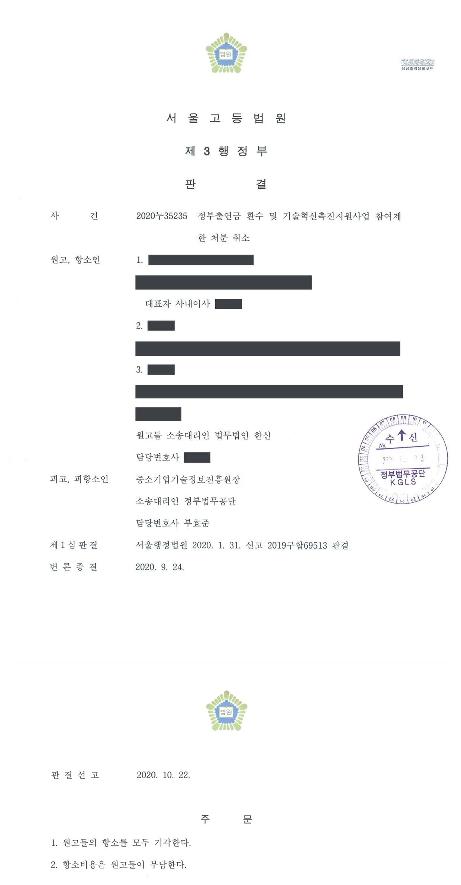

국가연구개발사업 정부출연금 환수 및 참여제한처분 취소소송 (1·2심)
서울행정법원 2019구합69513 · 서울고등법원 2020누35235 · 담당변호사 부효준
판결문


사건의 요지
민관 공동투자 기술개발사업의 과제 수행과 관련하여 회사·대표자·과제책임자에게 내려진 출연금 환수 및 3년의 참여제한처분에 관하여, 이의신청에 따른 2차 통보의 처분성과 처분사유의 존재 여부가 다투어진 사건입니다.
사건의 주요 내용
원고들은 무정전 전원장치 등을 제조·판매하는 중소기업과 그 대표자, 그리고 과제책임자입니다. 원고 회사는 2014년 민관공동투자기술개발사업 공고에 따라 이동형 전기식 전원공급기의 국산화 개발 과제를 신청하여 2014년 10월 전문기관과 협약을 체결하였습니다. 기술개발기간은 당초 2014년 8월부터 2016년 8월까지 24개월이었으나 2017년 8월까지 연장되었고, 원고 회사는 2017년 10월 최종보고서를 제출하였습니다.
전문기관은 최종평가와 성실성검증위원회에서 '실패(불성실)' 판정이 내려지자 2019년 2월 13일 원고들에게 '제재조치위원회 심의결과 안내'라는 제목으로, 연구개발과정을 불성실하게 수행하여 그 결과가 극히 불량한 경우에 해당한다는 이유로 정부출연금 전액(정산금을 제외한 159,497,028원)의 환수와 주관기관·대표자·과제책임자에 대한 각 3년의 참여제한을 통보하였습니다(1차 통보). 이 통보서에는 이의신청 외에 행정심판·행정소송을 제기할 수 있다는 점과 그 청구기간도 적혀 있었습니다.
원고들이 운영요령 제38조에 따라 이의신청을 하자, 전문기관은 2019년 5월 14일 이의신청 심의결과를 통보하면서 환수금을 159,497,472원으로, 참여제한기간을 2019년 6월 3일부터 2022년 6월 2일까지로 다시 적었습니다(2차 통보). 원고들은 이 2차 통보를 처분으로 보아 그 취소를 구하는 소송을 제기하였고, 부효준 변호사는 피고 전문기관을 대리하였습니다.
쟁점
- 운영요령에 따른 이의신청을 받아들이지 않는다는 전문기관의 2차 통보가 항고소송의 대상이 되는 처분인지
- 이의신청 결과 참여제한기간의 시기·종기와 환수금 납부시기가 바뀌고 환수금이 444원 늘어난 것이 당초 처분의 주요 부분을 실질적으로 변경한 새로운 처분인지
- 제소기간이 1차 통보를 기준으로 진행되어 이의신청 중에 지나갈 수 있다는 사정이 2차 통보를 처분으로 볼 근거가 되는지
원고들의 주장
- 원고들은 2019년 5월 14일의 2차 통보가 환수처분과 참여제한처분이라는 전제에서 그 취소를 구하였고, 특히 환수금액이 1차 통보의 159,497,028원에서 159,497,472원으로 늘어났으므로 적어도 그 증가 부분은 새로운 처분이라고 주장하였습니다.
- 이의신청에 대한 심사가 길어져 행정심판이나 행정소송의 제소기간이 지난 뒤에야 이의신청이 기각되면 처분을 다툴 방법이 없게 되어 부당하다고 주장하였습니다.
- 2차 통보서에도 행정심판·행정소송의 청구기간이 안내되어 있으므로 2차 통보는 처분으로 보아야 한다는 취지로도 주장하였습니다.
부효준 변호사의 주장
- 2차 통보는 1차 통보로써 이미 이루어진 참여제한처분과 정부출연금 환수처분에 대한 원고들의 이의신청을 받아들이지 않는다는 취지의 통보일 뿐이므로, 항고소송의 대상이 되는 처분이 아니어서 그 취소를 구하는 소는 부적법하다고 본안 전 항변을 하였습니다.
- 1차 통보와 2차 통보의 환수금 차이 444원은 정산금 산정 과정에서 백 원 이하를 절삭하였는지에 따른 계산 방식의 차이에 불과하다는 점을 계산근거 자료와 함께 밝혔습니다.
법원의 판단
법원은 항고소송의 대상이 되는 행정처분은 국민의 구체적인 권리의무에 직접적 변동을 초래하는 행위를 말한다는 법리를 전제로, 2차 통보는 1차 통보로써 이미 이루어진 참여제한처분과 환수처분에 대한 이의신청을 받아들이지 않는다는 사실을 안내하는 것으로서 종전 처분을 그대로 유지함을 전제로 한 업무처리의 적정과 원고들의 편의를 위한 조치에 불과하여 항고소송의 대상이 되지 않는다고 판단하였습니다.
그 근거로 1차 통보서에 처분임이 명시되어 있었고, 운영요령상 이의신청은 법령에 직접 근거가 없는 불복수단으로서 별도의 심판기관에 불복하는 행정심판과 달리 처분청이 스스로 다시 심사하여 잘못을 시정하는 절차에 불과하며, 참여제한기간과 납부시기의 변동은 이의신청으로 처분의 효력을 일시 정지하고 심사하기 위한 것일 뿐 처분의 주요 부분을 실질적으로 변경한 것이 아니고, 444원의 차이는 계산 방식의 차이에 불과하다는 점을 들었습니다.
또한 1차 통보서와 첨부서류에 이의신청 외에 행정심판·행정소송을 제기할 수 있다는 점과 청구기간이 명시되어 있었으므로 이의신청 절차가 끝난 뒤에야 소송을 제기할 수 있다고 믿을 합리적 근거가 없고, 2차 통보서의 청구기간 안내는 처분임을 전제로 한 불복방법 안내가 아니라고 보았습니다. 이에 따라 처분사유에 관한 본안 판단에 나아가지 않고 원고들의 소를 모두 각하하였으며, 원고들이 항소한 항소심(서울고등법원 2020누35235)에서도 2020년 10월 같은 결론이 유지되었습니다.
항고소송의 대상이 되는 행정처분은 행정청의 공법상의 행위로서 특정사항에 대하여 법규에 의한 권리의 설정 또는 의무의 부담을 명하거나 기타 법률상 효과를 발생하게 하는 등 국민의 구체적인 권리의무에 직접적 변동을 초래하는 행위를 말한다.
위 법리에 비추어 앞서 인정한 사실 및 변론 전체의 취지에 의하여 인정되는 다음과 같은 사정을 종합하여 보면, 이 사건 2차 통보는 이 사건 1차 통보로써 이미 이루어진 기술혁신촉진 지원사업에 대한 참여제한처분 및 정부출연금 환수처분에 대하여 원고들이 한 이의신청을 받아들이지 아니한다는 사실을 안내하는 취지로서, 종전의 처분을 그대로 유지함을 전제로 피고의 업무처리의 적정 및 원고들의 편의를 위한 조치에 불과할 뿐이고, 원고들의 권리ㆍ의무에 직접적인 변동을 초래하는 행위로 보이지는 않으므로, 항고소송의 대상이 되지 않는다.
서울행정법원 2019구합69513 판결 이유 '3. 나. 판단' 1)·2) 부분
원고들이 이 사건 처분에 대하여 한 이의신청은 중소기업기술혁신법 및 같은 법 시행령에 직접적인 근거를 두고 있지 아니하고, 이 사건 운영요령 제38조에 근거하여 인정되는 불복수단이다. 이는 행정청의 위법 또는 부당한 처분이나 부작위로 침해된 국민의 권리 또는 이익을 구제함을 목적으로 하여 행정청과 별도의 행정심판기관에 대하여 불복할 수 있도록 한 절차인 행정심판과는 달리, 이 사건 처분을 한 피고가 이의신청사항을 다시 심사하여 잘못이 있는 경우 스스로 시정하도록 한 절차에 불과하다.
서울행정법원 2019구합69513 판결 이유 '3. 나. 2) 나)' 부분
이 사건 2차 통보에 의하면 원고들의 참여제한 기간의 시기와 종기, 환수금 납부시기가 이 사건 1차 통보에서 고지된 내용에서 변동되기는 하였다. 그러나 위와 같이 참여제한 기간의 시기와 종기, 환수금 납부시기가 변동된 것은 원고들이 이 사건 처분에 관하여 이의를 함에 따라 처분의 효력을 일시적으로 정지하고 이의신청사항을 심사하기 위한 것일 뿐, 이 사건 처분의 주요부분을 실질적으로 변경한 것으로 볼 수는 없다.
서울행정법원 2019구합69513 판결 이유 '3. 나. 2) 다)' 부분
※ 판결 이유 가운데 이 사건의 판단 기준이 된 부분을 그대로 옮긴 것으로, 당사자 이름 등은 가렸습니다.
이 사건이 보여 주는 것
전문기관의 제재처분에 대한 운영요령상 이의신청은 처분청이 스스로 다시 심사하는 절차일 뿐이므로, 그 결과 통보는 새로운 처분이 아니고 소송의 대상은 처음의 처분 통보입니다. 이 판결 당시에는 이의신청을 하였더라도 행정소송의 제소기간(처분을 알게 된 날부터 90일)이 1차 통보를 기준으로 그대로 진행된다고 보았으므로, 이의신청과 행정소송을 함께 준비하지 않으면 다툴 기회를 잃을 위험이 있었습니다.
다만 이 판결 뒤 시행된 행정기본법 제36조 제4항(2023년 3월 시행)은 이의신청 결과를 통지받은 날부터 90일 이내에 행정심판이나 행정소송을 제기할 수 있도록 정하였으므로, 이의신청과 제소기간의 관계는 그 뒤 달라졌습니다. 그렇더라도 소송의 대상은 여전히 원래의 처분이므로, 어느 통보가 처분인지를 정확히 가려 청구취지를 정하는 것이 중요합니다.
비슷한 처분을 받으셨다면
국가연구개발 제재처분은 사전통지를 받은 날부터 20일 이내에 재검토 요청 의견을 내고, 처분이 있음을 안 날부터 90일 이내에 취소소송을 제기해야 합니다. 처분서나 사전통지서를 받은 날짜부터 확인해 드립니다.